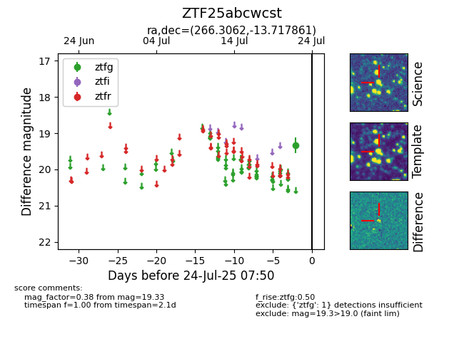

Target ZTF25abcwcst at 2025-07-24 07:50, see:
FINK: fink-portal.org/ZTF25abcwcst
Lasair: lasair-ztf.lsst.ac.uk/objects/ZTF25abcwcst
ALeRCE: alerce.online/object/ZTF25abcwcst
alt names
ZTF25abcwcst (ztf,fink)
coordinates:
equatorial (ra, dec) = (266.3062,-13.71786)
galactic (l, b) = (13.0229,+7.94357)
photometry
last ztfg=19.33
1 ztfg detections
